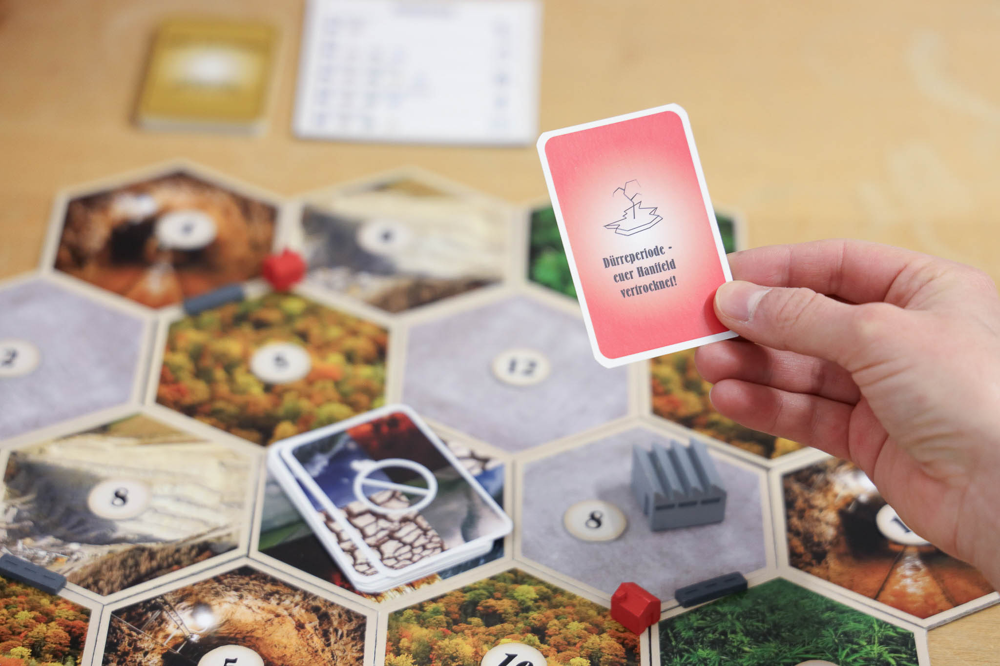
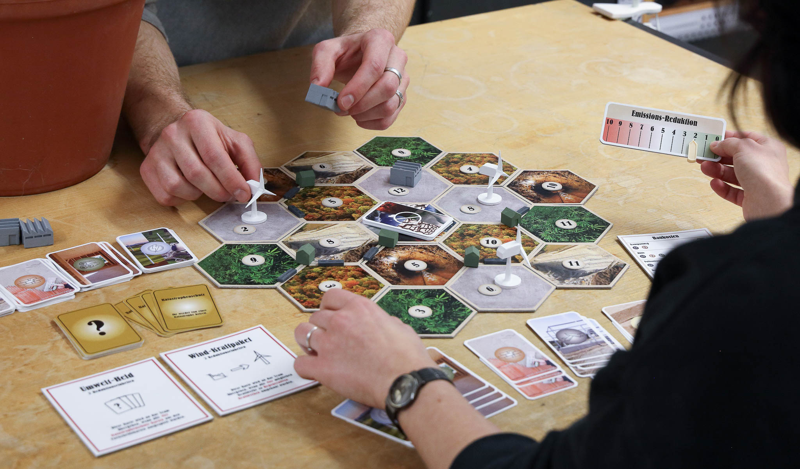

Energie Siedler
In Zusammenarbeit mit Dennis Zwehl entstand eine moderne Interpretation des Spieles „Siedler von Catan“. In unserem Spiel stehen der Systemwandel im Bau- und Energiesektor und die Auswirkungen der Klimakrise im Mittelpunkt.
Team
Dennis Zwehl, Isa von Ohlen
Mentor
Tobias Jänecke (FH Potsdam)
Year
2022/23

